INLEIDING
We kennen allemaal wel de uitspraak ‘over smaak valt niet te twisten’. Iedereen heeft wel een lievelingskleur of een lievelingsgerecht. Smaak lijkt volledig subjectief oftewel: je wordt beïnvloed door je persoonlijke mening en gevoelens. De keuze maak je met je hoofd, hart en onderbuik. Misschien vindt je de kleur rood een prachtige kleur maar verafschuw je oranje. En wie ben ik om te zeggen dat je ongelijk hebt? In mijn tijd in Tanzania, waar ik drie maanden heb doorgebracht afgelopen jaar, werd ik omringd door vrouwen in kleurrijke outfits. Van losjes om het lichaam gewikkelde rokken tot strakke jurken van dik katoen in exotische prints in felle, uitgesproken kleuren. Geen enkele jurk was hetzelfde. Deze manier van kleden en de stoffen zijn een weerspiegeling van de Afrikaanse cultuur. Deze toonaangevende Afrikaanse stoffen worden al sinds 1846 ontworpen en geproduceerd door de firma Vlisco in Helmond. Hoe verhouden de stoffen zich tot het grafisch ontwerp in Afrika? Er is een duidelijke link te zien met het ontwerp van de stoffen. De drukke patronen en felle kleuren zie je ook wel terug in boeken, flyers, vlaggen en posters. Keuzes in ontwerp, kleur, lettertypes en composities lijken te worden gemaakt met een bepaald instinctief gevoel voor ontwerp. De volledige visuele manier van ontwerpen is in het westen al langere tijd ‘uit de mode’. Op de Koninklijke Academie Beeldende Kunsten, waar ik inmiddels bijna vier jaar aan studeer, worden grafisch ontwerpers als onderzoekers omschreven. 1“Zij die kritisch kijken naar hun vak en de wereld en zich verdiepen in verandering. Ze stellen veelvuldig vragen en vinden daarmee uit waar informatie verborgen zit, welke vorm aan informatie gegeven kan worden en hoe die toegankelijk kan worden gemaakt.” Met overtuiging kan ik al in mijn inleiding zeggen dat deze rol, die wij de grafisch ontwerper geven, niet overal in de wereld geldt. En al helemaal niet in Oost-Afrika. Hoe is deze ‘kloof’ ontstaan? Heeft het te maken met cultuur, tradities en opvoeding? Of is het een kwestie van smaak?01.1 SMAAK & SCHOONHEID Emmanuel Kant deed verschillende uitspraken over smaak2. Naar zijn mening waren oordelen over schoonheid gebaseerd op kenmerken van het kunstwerk en niet alleen op ons en onze voorkeuren. Om een voorbeeld te nemen: de rode roos, die in principe wordt beoordeeld als ‘mooi’. Het smaakoordeel wat wij daar aan geven lijkt universeel te zijn. Omdat ik heb geleerd van mijn omgeving dat een rode roos mooi is, ben ik het daarmee eens. In mijn hoofd heb ik een mentale kast van spullen die ik categoriseer als ‘mooi’. Zo is er ook een prullenbak, waar ik de naaktkat en het lettertype Comic Sans in plaats. Die verdeling die ik in mijn hoofd maak, heeft dus onder andere te maken met onze opvoeding, scholing, kennis, vrienden en familie. Toch is er ook een gevoelskwestie die meespeelt. Wanneer een ontwerp, kunstwerk of een ander object iets in mij raakt, kenmerken we dat ook als ‘mooi’. Volgens Kant2 zijn er verschillende manieren van genieten, naast het genot van schoonheid. Bijvoorbeeld een rode aardbei: naast zijn kleur en structuur, wil je deze ook graag opeten, omdat de aardbei overheerlijk ruikt en smaakt. Deze oordelen beïnvloeden jouw mening over hoe mooi de aardbei is. Ook de erotische verlangens die iemand misschien voelt bij het bekijken van het schilderij Venus van Botticelli, heeft niets te maken met de schoonheid van dat schilderij. Iemand kan ook verlangen naar de vrouw die op het schilderij is afgebeeld. Kortom, volgens Kant wordt iets als ‘mooi’ gezien wanneer een kunstwerk onze emoties, verstand en verbeelding raken. Het begrip ‘esthetiek’ is afgeleid van het Griekse woord aistehsis, wat sensatie of waarneming betekent. De Schotse filosoof David Hume gebruikte niet de term ‘esthetiek’ maar gebruikte het begrip ‘smaak’. Hij beschreef smaak als ‘een verfijnde mogelijkheid om kwaliteit waar te nemen in een kunstwerk’2. De ontwikkeling van smaak kwam volgens hem door de opvoeding en de ervaringen van een persoon. De persoon die smaak had door opvoeding en ervaringen, ontwikkelde daarmee bepaalde kwaliteiten. Niet iedereen beheerste deze kwaliteiten. Dat kon ook niet, de groep mocht niet te groot worden. Deze kleine groep mensen zou uiteindelijk vaststellen wat goed en slecht was en een standaard bepalen. De rest van de gemeenschap zou aannemen wat door hen werd besloten. Kortom, Kant en Hume beweren beiden dat smaak en schoonheid heeft te maken met het oordeel dat iemand geeft, ontwikkeld door kennis, opvoeding en ervaringen2. De cultuur, ook wel de beschaving (alle gewoontes en gebruiken van een bepaald volk of een groep mensen) heeft hier dus alles mee te maken. Voordat ik daar verder op in ga, ga ik me verder verdiepen in het onstaan van de westerse en Oost-Afrikaanse cultuur.
02.1 CULTUUR De officiële definitie van cultuur is: beschaving, alle gewoontes en gebruiken van een bepaald volk of een groep mensen 3. Het woord cultuur komt uit het Latijn van cultura en is afgeleid van colere. Colere betekent: bebouwen, bewerken, vereren, versieren, onderhouden. De Romeinen gebruikten het bijvoorbeeld in agri cultura, het bewerken van de akkers. In de renaissance gebruikten veel schrijvers “cultura animi”. De letterlijk vertaling daarvan is: bebouwing van de geest4. Maar het wordt ook wel begrepen als vorming van de geest. Kortom, in deze woorden bevinden zich al vervorming en verandering van de geest. Het tegenovergestelde van cultuur is het begrip natuur, dat wat is aangeboren en wat hetgeen wat bestond vóór menselijk ingrijpen. Cultuur is dus een heel ruim begrip waaronder alle activiteiten vallen van de mens die te maken hebben met het leefbaar en bewoonbaar maken van de wereld. Maar cultuur is ook een manier om kennis, ervaringen en tradities door te geven aan volgende generaties. Het heeft ons in zekere zin gevormd tot wie we nu zijn. Cultuur reist, net als de mens, de hele wereld over. We kijken van elkaar af, laten elkaar inspireren en nemen dingen over. Denk aan architectuur, kunst en muziek. Laatst liep ik door Den Haag waar ik een woonblok tegenkwam, De Oriënt, volledig geïnspireerd op Indische bouwkunst. Maar ook wereldmuziek is altijd al enorm populair. Onder andere zijn de Afrikaanse en Amerikaanse invloeden zijn niet meer weg te denken uit onze huidige muziek en onze muziek geschiedenis.
02.2 DE WESTERSE CULTUUR Het begrip ‘westerse cultuur’ wordt veel gebruikt. De wereld is bijna te verdelen in twee culturen: westers en niét westers. De Grieken ontwikkelden in de Oudheid de eerste aspecten van onze westerse cultuur. In het begin van de oudheid werd nog gedacht dat de wereld een mythische oorsprong had en dat de aarde plat was. Na verloop van tijd veranderde deze gedachten en ontdekte men dat de wereld rond was en dat de aarde in het centrum van het heelal stond. Ook het beeld van de mens veranderde naar een ‘zelfstandig wezen’. Door vragen te stellen en antwoorden te zoeken, bereikten mensen een hoger niveau in kennis. Hiermee legden de Grieken de basis voor het mens- en wereldbeeld in de westerse wereld. De Romeinen namen veel kennis over van de Grieken. Ze ontwikkelden zich verder door zich nog meer te verdiepen in de rechten en plichten van de burger. Ze schonken veel aandacht aan het opstellen van schriften en wetten. Daarnaast hielden ze zich bezig met het verbeteren van de kwaliteit van het leven. Het mensbeeld van de Joods-Christelijke cultuur werd gekenmerkt door God. De mens heeft een vrije wil maar werd gestraft als hij zich niet aan Gods wil hield. God stond centraal, de individuele mens moest georiënteerd blijven aan de wil van god. Ieder moest de kans krijgen om naar de hemel te mogen, ook al zochten mensen af en toe het kwade op. Adam en Eva waren daarvoor het perfecte voorbeeld. Belangrijk was ook zeker dat iedereen werd gezien als volwaardig mens. Geen discriminatie op rassen, huidkleur, sekse en dergelijke. De vrouw was daarentegen wel het ondergeschikte figuur in de verhouding man - vrouw. Het huwelijk moest in vergelijking met de Romeinen wel monogaam zijn, ook vanaf de kant van de man. De Renaissance staat letterlijk voor wedergeboorte. In deze tijd werden de kennis en wijsheden van de klassieke oudheid opnieuw onder de loep genomen. De mens en het leven op aarde stond weer centraal. Er werd veel nagedacht over wetenschap, kunst en filosofie. Er werden lijken ontleed om meer kennis te krijgen van het menselijk lichaam. In de kunst zag je langzaamaan weer wat meer naakt terugkomen iets wat in de middeleeuwen streng verboden was. Ook was het dé tijd van de ontdekkingsreizen, waardoor nieuwe continenten werden ontdekt. Als gevolg van de ontdekkingsreizen veranderde er een een hoop in de handel en economie. Het was ook de tijd van grote godsdienstconflicten, heksenvervolgingen en de slavenhandel vanuit Afrika. Tijdens de Verlichting werd verder nagedacht over de leer en de ideeën van de Grieken en de Romeinen. Kenmerkend voor deze tijd was dat de mens als rationeel wezen werd gezien. De ideale samenleving zou kunnen worden bereikt wanneer de mens vrijheid had om zijn verstand (de rede) goed te gebruiken. De Franse Revolutie was een poging om die ideale samenleving tot stand te brengen. Architectuur en beeldende kunst waren in de tijd van de Verlichting sterk gerelateerd aan de Klassieke Oudheid. Er werd veel gekeken naar de kunst van de Grieken en de Romeinen. Na de Verlichting kwam de Romantiek. Tijdens de Romantiek kregen fantasie en gevoel een belangrijkere plaats en werd het verstand wat meer naar de achtergrond verdreven. Waar Verlichters streefden naar een volmaakt mens met verstand en goede normen en waarden, ging het in de Romantiek vooral over het gevoel. Daarnaast zie je dat Nationalisme een belangrijke rol kreeg. Men kreeg meer waardering voor de eigen cultuur en waarden, wat ook terug te zien is in de kunst. Het Romantische verlangen naar het verleden, doet oude stijlen herleven in de kunst. Modernisme Eind negentiende eeuw, na de Industrieële Revolutie, komt het Modernisme op. Na de Eerste Wereldoorlog, in een tijd van politieke en financiële chaos, verlangd de mens naar een betere toekomst. Een betere tijd met een nieuw en beter mens. De nieuwe kunst laat zich beïnvloeden door moderne technologieën en vooruitgang is het nieuwe streven. Men vertrouwd op geldende wetenschappen en oude gewoontes worden van de baan geveegd. De opkomst van radio en telefoon maakt de uitwisseling van ideeën en gedachten eenvoudiger dan ooit. Voor de ware Modernist was de machine hét symbool voor vooruitgang. Het functionele design van de Hema en de woonwijken als de Bijlmer zijn voorbeelden van het Modernisme. In ons hedendaagse leven zie je dan ook nog steeds veel invloeden van deze tijd.
02.3 HUIDIGE CULTUUR Duidelijk mag wezen dat de Grieken en Romeinen absoluut de grondleggers zijn van onze westerse cultuur. Reflectie op onze eigen cultuur en vrijheid van meningsuiting zijn twee kenmerken van de westerse cultuur. Door deze kenmerken onderscheidt de westerse cultuur zich van andere culturen. Het begrip ‘westerse cultuur’ is inmiddels een verzamelterm voor de vele westerse (sub)culturen en is wereldwijd bekent. Volledige vrijheid van meningsuiting blijft natuurlijk altijd ingewikkeld. Bij het uiten van een mening zijn er vaak mensen die zich gekwetst of aangesproken voelen. In principe mag alles in de westerse cultuur ter discussie worden gesteld en is het geoorloogd dat men een afwijkende mening heeft, zonder bang te hoeven zijn voor de gevolgen. Natuurlijk was het in de tijd van de oudheid nog niet mogelijk om volledig je eigen mening te geven over bepaalde onderwerpen. De periode na de oudheid, waar de wetten, normen en waarden verder ontwikkeld zijn, heeft daar onder meer voor gezorgd. De man-vrouw verhouding in de huidige westerse cultuur is niet te vergelijken met die in de Oudheid. Het feminisme in de twintigste eeuw heeft gestreden voor rechten van de vrouw, wat ervoor heeft gezorgd dat mannen en vrouwen dezelfde rechten en plichten hebben. Dit zie je terug in de politiek en belangrijke maatschappelijke posities waar mannen en vrouwen beiden vertegenwoordigd zijn. De westerse cultuur weerspiegelt nog altijd vele gewoontes van het Christelijke geloof, ook al vervult het geloof een minder belangrijke rol in het dagelijks leven. Veel mensen in de westerse wereld zoeken hun spiritualiteit op een andere manier.
03.1 DE OOST-AFRIKAANSE CULTUUR De Afrikaanse cultuur en de ontwikkeling daarvan is een te groot onderwerp voor deze scriptie. Ik wil me daarom beperken tot Oost-Afrika en dan met name op Tanzania. Als ik het in het vervolg over Oost-Afrika heb, bedoel ik dan ook Tanzania, Kenia, Oeganda, Burundi en Rwanda. Deze vijf landen zijn lid van de OAG (Oost-Afrikaanse Gemeenschap). Om een indruk te geven, we praten over ongeveer 1,8 miljoen km2 land en ongeveer 125 miljoen bewonders. Swahili en Engels zijn de meest gesproken talen in dit gedeelte van Afrika4. Er wordt gesuggereerd dat Oost-Afrika als eerst door mensen bewoond werd. In de 8e eeuw bereiken de Arabieren de kust van Tanzania. Rond de 12e eeuw hadden zich veel Arabieren en handelaren uit landen als Perzië en India zich gevestigd en verspreid over de oostkust van Afrika. Zo ontstonden er steden en handel. Begin 15e eeuw arriveerden ook de Portugezen, maar die werden al snel verdreven door de Arabieren die Zanzibar innamen. Halverwege de 19e eeuw, tijdens de Renaissance, kwamen de Europeanen tijdens een van de ontdekkingsreizen langs Oost-Afrika. Er volgde een periode van strijd om Tanzania tussen Duitsland, de Arabieren en Groot-Brittannië. Ook Kenia was in trek bij de Portugezen en Arabieren. De Europeanen werden nieuwsgierig door alle verhalen van de ontdekkingsreizigers. Rond 1888 werd Oost-Afrika opgedeeld tussen Engelsen en Duitsers. Zo kreeg de Engelse Koningin Victoria Mount Kenya en de Duitse Kaiser Wilhelm de Kilimanjaro in Tanzania. Er werden wegen en spoorwegen aangelegd en er vestigden zich allerlei Europese landeigenaren en ondernemers in Oost-Afrika. Na de Tweede Wereldoorlog ontwikkelde Kenia een tegenbeweging en dat zorgde in 1963 voor onafhankelijkheid. Tanzania was vlak daarvoor onafhankelijk geworden.
03.2 DE MASAI Een van bekendste stammen uit Oost-Afrika is de Masai. De fel rode kledij, de kenmerkende sieraden, de dans waarbij ze hoog in de lucht springen en de gezichtsversieringen staan symbool voor deze stam. De Masai is van oorsprong een nomadenvolk, ze trekken rond met hun vee wat bestaat uit koeien, schapen, ezels en geiten. Rond 1840, wanneer de eerste blanken naar Oost-Afrika komen, wordt het lastiger voor de Masai. De blanken brengen ziektes mee, nemen land in en er breekt een runderpest uit waardoor veel vee sterft. 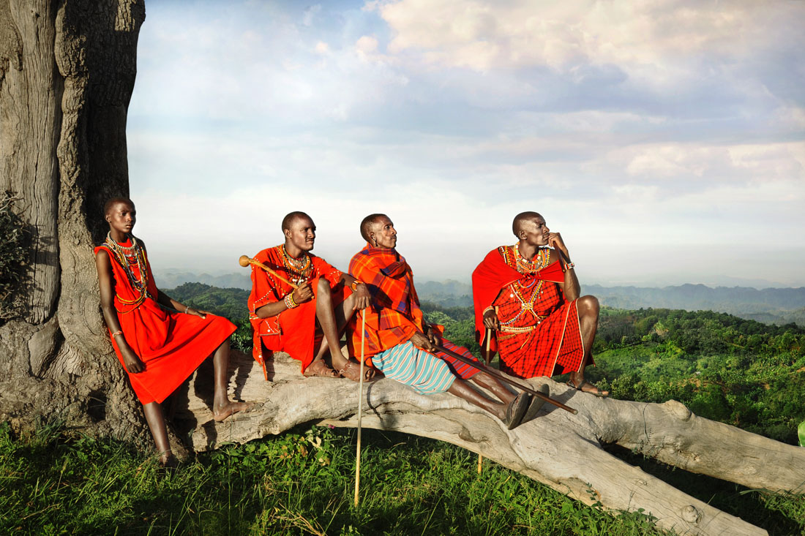 Nog altijd leeft de Masai in een gedeelte van Tanzania en Kenia. Ze eten bijna alleen maar vlees, voornamelijk koeien, geiten en schapen, maar geen wilde dieren, vis of kip. Ze eten weinig of geen groenten en fruit. In droge periode drinken ze bloed van de koeien. Eigenlijk zoals wij wel eens bloed afgeven bij de bloedbank, tappen zij een halve liter van het bloed van de koe om dat vervolgens te mengen met melk. De levenswijze wordt ook wel pasmoralisme genoemd. Naast het bloed-ritueel is de Masai vooral bekend van de kleding en sieraden die zij dragen. Slechts een tot twee doeken dragen zij over hun lichaam, geknoopt over de schouders en rond de heupen. De kleuren van deze stoffen zijn voornamelijk rood en donker blauw. De sieraden worden gedragen rondom het hoofd, de oren en de nek. Ze gebruiken schmink voor hun hoofd, armen en benen. De schmink combineren ze met sieraden waardoor allerlei patronen op het lichaam ontstaan. Wanneer jongens en meisjes volwassen worden, vindt de emorata plaats, ook wel besnijdenis genoemd. Voor jongen betekent dat meer vrijheid, voor meisjes betekent dat het tegenovergestelde. Vaak worden de meisjes kort na het ritueel uitgehuwelijkt aan een oudere man. Het ritueel vindt plaats zonder verdoving en dient zonder stemverheffing ondergaan te worden. Het genezingsproces duurt drie tot vier maanden. Het is tegenwoordig verboden om dit ritueel nog uit te voeren, toch gebeurt het nog steeds. Gelukkig ontkomen er tegenwoordig ook een hoop Masai-meisjes aan de pijnlijke traditie.
03.3 KLOOF IN DE MAATSCHAPPIJ De Masai is een van de volkeren van Oost-Afrika, maar er zijn ook nog vele andere volkeren en groeperingen. Zij leven allemaal weer anders. De rijkere groepen in Zanzibar, waar ik veel in heb begeven, komen langzaam maar zeker meer in contact met de westerse cultuur. Smartphones en laptops zorgen ervoor dat de toegang tot internet groter wordt. Filmpjes op Youtube, foto’s op Facebook en tweets verbreden hun wereld aanzienlijk. Ze zijn nieuwsgierig naar andere culturen. Rijke families die zich financieel veel kunnen permiteren, sturen hun kinderen vrijwel altijd naar het buitenland om daar te gaan studeren. Er ontstaat een grote kloof tussen zij die hebben gestudeerd in het buitenland en de lokale bevolking. Niet alleen financieel maar ook wat kennis, opvattingen en ideeën betreft. Engels is de taal die alleen wordt gesproken door degenen die goede scholing hebben gehad. Met het beheersen van deze ‘universele’ taal, wordt de kans op een baan groter. Daarnaast is het opvallend dat een groot deel van de bevolking weinig amibities heeft. Men is nauwelijks geïntesseerd in het vergroten van kennis of in carrière maken in het bedrijf waar men werkt. Men is niet bezig met het verbeteren van zichzelf, om daardoor hogerop te komen. De werkdrift, zoals wij het in Nederland kennen, heb ik daar weinig gezien. Het gebrek aan ambitie aan ambitie is misschien ook wel terug te vinden in het niveau van het grafische ontwerp van de lokale bevolking. Als ik vroeg aan mijn collega’s waarom ze voor bepaalde lettertypes, kleuren en composities hadden gekozen konden ze daar vrijwel nooit antwoord op geven. Ik kreeg eerder een verontwaardigde blik, wanneer ik daar naar vroeg. Hierdoor kreeg ik de indruk dat de manier die ik heb geleerd om grafisch te ontwerpen, daar helemaal niet van toepassing is. De regels die ik heb meegekregen in mijn leven, werk en opleiding zijn cultuurgebonden. Kunst die wordt gemaakt in en rondom Afrika (schilder- en beeldhouwkunst) zijn vooral gericht op het mooie beeld. Er wordt veel gebruik gemaakt van felle kleuren en gekopieerde letters uit de ‘westerse cultuur’. Ook de cultuur van de traditionele stammen wordt veel weergegeven. Ik heb twee keer een maand door Tanzania gereisd. Ik heb daarbij verschillende delen van het land bezocht. In alle delen van het land zag ik dezelfde afbeeldingen, schilderijen en beelden terugkomen. 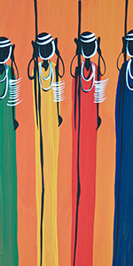 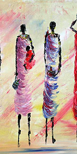 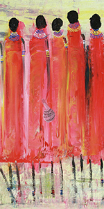
04.1 GRAFISCH ONTWERP IN NEDERLAND Waar vroeger een grafisch ontwerper geacht werd logo’s, boeken en flyers te ontwerpen, is dat nu wel anders. Dit heeft ten eerste te maken met de technische mogelijkheden die we tegenwoordig tot onze beschikking hebben. Hoe heeft het grafisch ontwerpen zich in de westerse cultuur ontwikkeld in de afgelopen eeuw? Na de uitvinding van de taal en het schrift ontstonden de eerste publicaties. De rijkeren van de samenleving lieten deze publicaties ontwikkelen door gespecialiseerden en deze werden met veel zorg met de hand geschreven. Dit waren vooral monniken in kloosters. Pas in de 15e eeuw werd de drukpers uitgevonden en deed het boek zijn voorzichtige intrede. Naast het boek werd in de zestiende eeuw de krant geïntroduceerd. Er verschenen kleine krantjes, van één kant, met vaak maar één nieuwtje. Ze waren handgeschreven en werden in beperkte oplages verspreid in verschillende steden in Europa. In het begin verscheen in deze kranten vooral het nieuws vanuit de regering. Al snel ontstonden er publicaties voor leukere nieuwtjes en ontspanning. Ook advertenties, raadsels, gedichten en kritische stukken vulden steeds meer pagina’s. De opmaak van de kranten werd steeds belangrijker. De burger ontwikkelde zich en werd nieuwsgieriger naar ontwikkelingen in en rondom het land. De pers werd zich steeds meer bewust van haar macht, maar moest ook vechten voor deze vrijheid. Publicaties werden gecontroleerd en censuur werd toegepast daar waar de overheid het nodig vond. Omstreeks 1890 ontstonden in Europa verschillende kunststromingen. In Frankrijk Art Nouveau, in Duitsland Jugendstil, in Groot-Brittannië Arts and Crafts en in Nederland de Nieuwe Kunst. De Nieuwe Kunst, met onder andere Jan Toorop en G.W. Dijsselhof, specialiseerden zich in het ontwerpen van boekbanden, vaak gedrukt op stof. De schilderkunst mengde zich met typografie en er ontstonden unieke ontwerpen op covers van boeken. Rond 1900 veranderde de wereld in hoog tempo, vooral door de Industriële Revolutie. Elektriciteit, de telefoon, televisie en radio werden onderdeel van de maatschappij. Ook massaproductie ontstond door het ontwikkelen van machines, die het werk overnamen van mensen. De vraag naar ontwerpers werd groter om alle producten te kunnen ontwikkelen. De expressieve ontwerpen die onder ander werden toegepast door de Jugendstil werden ingeruild voor heldere, vereenvoudigde ontwerpen. De ontwerpen moesten namelijk aan de man worden gebracht wat resulteerde in informatieve, heldere beeldtaal. Het werd belangrijk om doeltreffend en zo duidelijk mogelijk te communiceren. Er ontstonden nieuwe stromingen als de Stijl (1917) en het Bauhaus (1919). Belangrijke leden van De Stijl waren onder andere Theo van Doesburg, Piet Mondriaan en Vilmos Huszar. De leden van De Stijl zorgden voor een verandering in de kunst, die gelijk liep met de technische, wetenschappelijke en sociale veranderingen in de wereld. Deze hervorming bestond uit het gebruik van een minimum aan kleuren (primaire kleuren, gecombineerd met zwart, wit en grijs) en een zo eenvoudig mogelijke vormgeving. Bauhaus, een stroming die ongeveer gelijk liep met de Stijl, experimenteerde met nieuwe technieken, materialen en vormen. Studenten van de kunstenaarsschool Bauhaus ontwierpen er efficiënte, elegante meubelstukken en gebruiksvoorwerpen. Strak van lijn, eenvoudig van vorm en zeer functioneel. Als reactie op het Bauhaus ontstond in de periode 1920 tot 1930 ‘de Nieuwe Zakelijkheid’. De Nieuwe Zakelijkheid, die na de Eerste Wereldoorlog ontstond, werd gekenmerkt door de maatschappelijke visies van de ontwerpers Theo Van Doesburg en Piet Zwart. Ze probeerden met hun ontwerpen een internationale eenheid binnen de kunst en cultuur te creëren. Piet Zwart was voorstander van functionaliteit. Volgens hem moest een ontwerp zowel rekening houden met ergonomie en gebruiksvriendelijkheid als met massaproductie. Hij was van mening dat de kunstenaar een belangrijke taak had in het verbeteren van de maatschappij en de leefomgeving. Hij geloofde niet in mooimakerij en maakte gebruik van de nieuwste technieken. In de jaren ’60 en ’70 voerden Wim Crouwel en Jan van Toorn de boventoon in de discussie over de rol van een grafisch ontwerper. Zij hadden verschillende opvattingen met betrekking tot de esthetische en de communicatieve waarden in het grafisch ontwerpen. Het werk van Jan van Toorn was emotioneel beladen, wat kwam door zijn interesse in de visuele betekenis en de sociale rol van het publiek. Het overbrengen van een boodschap, in al zijn positieve en negatieve oogpunten. Hij zag het als visueel journalisme en wees op de kracht van het ontwerp als meningvormend principe. De maatschappelijk betrokken rol die hij aannam, gold niet voor de ideeën die Crouwel had over ontwerpen. Wim Crouwel’s vroeg modern en futuristisch werk, liep ver vooruit op het huidige computertijdperk. Hij benaderde grafisch ontwerp op een methodische, systematische wijze. Zijn innovatieve gebruik van stramienen en grids en zijn fascinatie voor experimentele typografie is vandaag nog net zo relevant als in de tweede helft van de vorige eeuw.
04.2 WORLD WIDE WEB De jaren 60 staan niet alleen centraal staan voor hippies en flower power, maar ook voor de Koude Oorlog tussen Amerika en de Sovjetunie. De Amerikanen waren bang dat de oorlog toch ‘warm’ zou worden en dat de Russen met een grote atoombom de eerste supercomputers van Amerika kwamen vernietigen. De Amerikanen besluiten daarom een netwerk aan te leggen tussen meerde computers die samen functioneerden als één. Wanneer er bepaalde delen plat kwamen te liggen, zou dit netwerk blijven werken. In 1996 gaat het Defense Advanced Research Projects Agency Network online, bestaande uit vier computers. Vanaf de jaren ’80 mogen ook universiteiten en bibliotheken het DARPAnet op. Dat is in die tijd nog ingewikkeld met allerlei codes, totdat het World Wide Web in de begin van de jaren ’90 wordt opgericht door Tim Berners-Lee. Techniek en technologie vormen de basis voor de huidige grafisch ontwerper in Nederland. Lang is het vak verbonden geweest met drukkunst en dat geldt nog steeds, maar wel minder. Naar mijn mening is de rol van een grafisch ontwerper tegenwoordig heel divers. De grafisch ontwerper in Nederland kan zich specificeren in de autonome kant, maar ook in de commerciële wereld. Een grafisch ontwerper in Nederland heeft soms een journalistieke rol, een technische achtergrond en is heel zelfstandig. Er wordt gebruik gemaakt van onder andere fotografie, film, boeken, posters, exposities en installaties. Alles is toegestaan, mits het jouw concept op een goede manier tot leven brengt. Als grafisch ontwerper draait het tegenwoordig veel om het concept: wat wil je zeggen, wat wil je bereiken. Je verdiept je in een onderwerp je analyseert en je onderzoekt. Vervolgens formuleer je een vraag of neem je een bepaald standpunt in. Dit is vaak een kritische blik op de wereld. Door middel van deze vraag ontwikkel je je idee naar een vorm. Daarbij is het goed om een eigen visuele taal te ontwikkelen. Tijdens het proces kijk je ten alle tijden kritisch naar je werk, je verbetert je, je discussieert, je leert en je ontwikkelt je. Het eerste idee en het eerste ontwerp zal nooit goed genoeg zijn. Er moet ontwikkeling plaatsvinden. Tijdens het ontwerpen en ontwikkelen van bepaalde projecten ben je je als grafisch ontwerper altijd bewust van alles wat er om je heen gebeurt. Het is belangrijk om veel te lezen en te horen en te zien van wat zich afspeelt in de wereld. Wat kunnen wij als grafisch ontwerpers aan het licht brengen wat nu verborgen wordt of afgeschermd. Door de komst van het internet is het tegenwoordig makkelijker om je te verdiepen in bepaalde onderwerpen die daarvoor niet bespreekbaar waren. Men schrijft, vertelt en deelt alles wat hij of zij wil. Naast deze journalistieke, kritische rol is er ook nog altijd de oorspronkelijk definitie van een grafisch ontwerper.
04.3 VOLGENS DE OORSPRONKELIJKE BRONNEN Van Dalen: grafisch < Grieks bijvoeglijk naamwoord 1 met betrekking tot de grafiek als kunst: een ~ kunstenaar 2 met betrekking tot het drukken van boeken en teksten: de grafische afdeling van een uitgeverij, de grafische vakkenboekdrukkerij en reproductietechniek 3 in de vorm van een tekening, afbeelding, een grafische voorstelling van het aantal werklozen per provincie in de vorm van een grafiek ontwerper de (m) [ -s ] iemand die een ontwerp of ontwerpen maakt Wikipedia: “Een grafisch ontwerper verzorgt de grafische vormgeving van drukwerk zoals brochures, affiches, verpakkingen en boekomslagen, digitale producten zoals websites, en ontwerpen voor gebruik in verschillende media, zoals een beeldmerk of huisstijl.” Duidelijk wordt dat Wikipedia nog altijd in de omschrijving heeft staan dat een grafisch ontwerper zich bezig houdt met het ontwerpen en ontwikkelen van drukwerk. Deze definitie is duidelijk van toepassing op de ontwerpers in Oost-Afrika. De Nederlandse ontwerpers zijn hier steeds verder van verwijderd. Al sinds de Stijl en de Nieuwe Zakelijkheid heeft het vakgebied een veel bredere betekenis gekregen. Er wordt steeds minder gebruik gemaakt van drukwerk. De mogelijkheden van internet, met name de interactiviteit die het scherm biedt, maakt drukwerk minder interessant. Een advertentie wordt tegenwoordig vaker geplaatst op Facebook dan in de krant. Uitgeverijen hebben het moeilijk, tijdschriften worden minder gekocht en kranten worden liever gelezen op internet. Toch is de combinatie van deze twee dimensies voor een grafisch ontwerper heel interessant. De digitale wereld en de conceptuele kunst hebben ervoor gezorgd dat het visuele aspect meer naar de achtergrond is verdwenen. Toch zal er altijd kennis nodig zijn van vormgeving, kleur en typografie. Ook al is het concept in sommige situaties belangrijk, wanneer de uitvoering niet overtuigend is, zal het concept ook niet goed overkomen. Door de verandering van de maatschappij heeft de beeldentaal ook een verandering doorgemaakt. We denken, leven en uiten ons dagelijks met emoticons. Daarnaast zorgen het beeldscherm (de pixels) en de kleur (RGB) voor andere vormgeving. De vereenvoudiging van woorden en zinnen die in het begin van onze SMS cultuur ontstonden, staan in contrast met de overvloed aan berichten per dag voorbij komen. Alles wat we zien is kort en krachtig of visueel zeer aantrekkelijk. Langere teksten lezen we alleen nog wanneer we er echt tijd voor nemen. Dat heeft ervoor gezorgd dat ook de vormgeving zich daaraan heeft aangepast. Felle kleuren, grote slogans, bewegende teksten die in en uit het scherm vliegen, knoppen waar we op klikken en een geïdealiseerde weergave. De westerse cultuur heeft een grote toegang tot kennis en we hebben de mogelijkheid om alles met elkaar te kunnen delen. De discussies die op internet ontstaan, zal menig van ons buitengewoon irriteren, maar geeft in sommige situaties wel inzicht in het feit dat we als volk meer dan ooit willen leren van elkaar en ons willen laten gelden. Overigens zijn deze discussies (voornamelijk over beroemdheden) niet het enige waar we ons mee bezig houden. Denk aan de grote hoeveelheid kennis die op internet wordt gedeeld: hoe je een website kunt coderen, hoe je gerechten kunt klaarmaken en andere ‘Do It Yourself’ handleidingen. Als we in discussies met elkaar een spreekwoord niet weten, de naam van een kunstwerk zijn vergeten of de snelheid van een raket willen weten, dan biedt de iPad uitkomst omdat alle antwoorden voor handen zijn. Kortom: onze kennis is verrijkt door onze ‘deel’ cultuur. Tegenwoordig zijn we er aan gewend dat het ‘World Wide Web’ overal toegankelijk is. Ongeveer 3 miljard mensen hebben dagelijks toegang tot dit netwerk. De drang van technologie bedrijven om het internet voor iedereen toegankelijk te maken, is grenzeloos. Facebook experimenteert met Drones boven gebieden waar nu nog geen internet is. Google houdt zich bezig met luchtballonnen die internet mogelijk maken. Maar tot op heden is Afrika nog hét werelddeel dat de minste aansluitingen heeft op internet. Slechts één van de vijf Afrikanen zijn aangesloten op dit ‘wereld vergrotende netwerk’.
05.1 GRAFISCH ONTWERP IN AFRIKA Oorspronkelijk is het woord kunst van kunde of ambacht afgeleid. De productie van manden kan als kunst worden gezien, maar het is ook een ambacht. Je ziet in Afrika nog altijd veel ambacht die tegelijkertijd ook kunst is. Vaardig is men met zijn handen en met middelen men heeft. Op straat wordt veel werk gepresenteerd. Schilderijen vervaardigd met verschillende technieken. Op stukken kaasdoek, canvas en houten plaatjes. Verhalende illustraties waarin plaatselijke bewoners en tradities worden afgebeeld. Ook beelden gemaakt van hout, stof en ijzer, representeren vaak inwoners en dieren. De kleuren rood, oranje en geel, printen uit de natuur en vachten van dieren weerspiegelen de Afrikaanse cultuur. In de grafisch sector zie je veel van deze symbolische elementen terug komen zoals de kleuren van de opgaande zon, zebra en luipaarden dessins. De originele elementen worden gecombineerd met verloopjes en schaduweffecten, gekopieërd uit de westerse wereld. De kopieën zijn net even iets minder verfijnd en er wordt gebruik gemaakt van slechte spatiëring en achterhaalde typografie.
05.2 TRADITIES EN GEWOONTES Tradities en gewoontes worden in ere gehouden. Elke week is er wel een festival of feestdag. Voor deze festiviteiten komen de mooiste kostuums uit de kast. Kostuums die worden gemaakt door kleermakers in het dorp. De vrouwen, ook wel de mammies genoemd, doen lang van te voren inkopen op de markt. Stoffen woorden zorgvuldig uitgezocht en met elkaar gecombineerd. Van losjes om het lichaam gewikkelde rokken tot strakke jurken, alles wordt gemaakt van dik katoen in exotische prints met uitgesproken kleuren. Deze stoffen omschrijven wij in de westerse wereld als typisch Afrikaanse stoffen. Vrouwen kiezen een dessin omdat ze het mooi vinden of vanwege de boodschap die ze ermee willen uitdragen. Voorbeelden zijn: Wanneer een vrouw vermoedt dat haar man vreemd gaat, kiest ze voor een stof waarop staat vermeld: Tu sors, je sors. Oftewel: Als jij gaat, ga ik ook! De illustratie verbeeldt het verhaal van twee vogels die uit hun kooi vliegen. Vrouwen die trots zijn op hun kennis en scholing, dragen het ABC waarop schoolborden, meetlatten en boeken zijn afgebeeld. Een vrouw heeft zin in een avontuurtje, ze draagt een stof waarop een kip en haar kuikens zijn verbeeld, maar de haan heeft alleen een kop. Hiermee wordt bedoeld dat de man er wel is, maar daar heeft de vrouw lichamelijk niets aan. 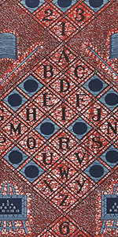 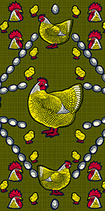
Bovenstaande stoffen zijn al jaren bestsellers van Vlisco, een stoffenfabrikant met een Afrikaans product. De stoffen worden ontworpen en ontwikkeld in Helmond. Veel Nederlanders weten dit niet. De meeste Afrikaanse vrouwen weten dit wel: de Khanga’s, zoals de dubbelzijdig bedrukte doeken heten, komen uit Nederland. Op elk ontwerp staat het vermeld: 'Guaranteed Dutch wax' of 'Véritable wax Hollandais'. Als je iets koopt wat van ver komt, moet het wel zichtbaar zijn. Sommige van ons hechten waarden aan merkkleding, Tanzanianen vinden het belangrijk dat er in de rand van de stof zichtbaar staat waar de stof vandaan komt. In de beginjaren maakte Vlisco industriële batikdessins die ze exporteerden naar Nederlands-Indië. Afrikaanse soldaten, door Nederland geplaatst in Indië, namen die stoffen vervolgens mee naar thuis in Afrika, waar ze goed bleken aan te slaan. Uiteindelijk bleek Afrika een betere en grotere markt dan het Verre Oosten. De productie van de stoffen is al die jaren in grote lijnen hetzelfde gebleven. Met was (tegenwoordig synthetische hars) worden op allebei de kanten van het katoenen stuk stof patronen aangebracht. Vervolgens wordt de stof geverfd. Op de plaatsen waar de was zat, zitten witte plekken die vervolgens kunnen worden ingekleurd met stempels. Hierdoor zijn er altijd onregelmatigheden in de patronen, waardoor elke stof uniek is. Er zijn daarom van elke stof altijd meerdere versies. China heeft de productie van Afrikaanse stoffen ook opgepakt. Met de technieken van tegenwoordig benaderen zij de kwaliteit en uitstraling van de originele doeken. Een paar jaar geleden werden ze een serieuze concurrent voor Vlisco, waardoor het bedrijf bijna failliet ging. Door het meer exclusief maken en het verder ontwikkelen van de producten heeft Vlisco toch zijn plaats op de markt kunnen behouden. De echte khanga’s van Vlisco zijn alleen maar te betalen door de rijkere Afrikanen. Een doek kost 50 tot 100 euro voor 5,5 meter, wat voor de meeste inwoners meer is dan een maandsalaris8. In de oude fabriek van Vlisco, die al sinds 1846 bestaat, werken achthonderd medewerkers. Op de ontwerpafdeling werken zeventien ontwerpers. Geen van de ontwerpers is Afrikaans, dat is altijd zo geweest. Volgens het bedrijf moet mode verrassen. Ze kiezen ervoor om te werken met designers met een ander referentiekader dan de consument.
05.3 GRAFISCH ONTWERPEN IN HET STRAATBEELD De dagelijkse kleding van Tanzaniaanse vrouwen is heel anders dan onze stijl. Ze kleden zich voornamelijk in lange gewaden in kleurige stoffen. De stoffen weerspiegelen duidelijk de cultuur en de gewoontes van Afrika. De felle kleuren en de uitgesproken patronen passen bij de explosieve karakters van de Afrikanen zoals ik ze heb leren kennen. Afrika heeft de stoffen omarmd als ‘haar product’ en weet als geen ander hoe ze moet omgaan met de doeken. Van jongs af aan zien kinderen hun moeder, tantes, oma’s en zussen de doeken dragen, combineren en op allerlei manieren omknopen. De traditionele waarde die ze hechten aan de manier van kleden is ook weer terug te zien in het grafisch ontwerp op straat. Bovendien maken de gekleurde stoffen het straatbeeld vrolijk. De mannen kleden zich over het algemeen meer westers. Spijkerbroek, t-shirts en gympen. Zoals ik eerder beschreef, merkte ik dat de Afrikaanse ontwerpers vooral gericht zijn op het beeld. Er is geen grafische opleiding in Tanzania. Mensen die dit werk doen, zijn in de praktijk opgeleid en gevormd. Zij leren door goed te kijken, te kopiëren en daar weer hun eigen vorm aan te geven. In mijn situatie heb ik gemerkt dat mensen nieuwsgierig en leergierig waren naar hoe ik mijn opdrachten aanpakte. In Zanzibar werd veel drukwerk gemaakt. Het is deels een rijk eiland waar veel toeristen komen. Dat is niet overal in Tanzania zo. Er zijn veel arme delen waar geen geld is voor drukwerk. Wat je wel overal ziet, zijn de muurschilderingen en handgeschreven reclame borden. 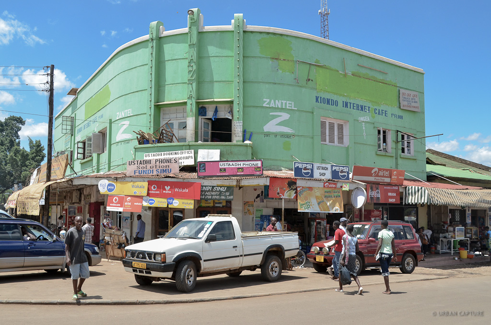 Deze foto is genomen in Moshi, een stad ten noorden van de officiële hoofdstad Dodoma. Zoals je kunt zien op de foto, zijn er een hoop reclame borden. Daarbij valt op dat ze kleurrijk zijn en handgeschreven. Je ziet veel illustraties die met de hand zijn geschilderd. Veel voorkomende reclame borden zijn van Coca Cola, Pepsi, Vodacom en Airtel. Die borden worden aangeleverd door deze grote bedrijven zelf en zijn gedrukt. Daarnaast is er veel reclame voor plaatselijke winkeltjes en bedrijfjes en die borden worden met de hand geschilderd. Het bord ‘USTADHI PHONES SOLUTION FUNDI SIMU’ vind ik een hele goede weergave van grafisch ontwerp in Afrika. Op dit bord zie je drie verschillende lettertypes en drie verschillende kleuren. Het lijkt alsof er toevallig drie verschillende lettertypes bij elkaar zijn geplaatst, maar misschien hebben ze er wel goed over nagedacht. De volgende foto heb ik gevonden in een foto archief. Dit soort beelden heb ik zelf ook veel gezien, vooral in het binnenland. De foto geeft duidelijk weer hoe druk het straatbeeld is door allerlei borden en afbeeldingen die bewoners aanbrengen. Het bord “verboden te parkeren” zou je bijna over het hoofd zien door al het visuele geraas op de achtergrond. De tekst DUKA LA DAWA betekent: apotheek. Zoals je kunt zien is er duidelijk gekozen voor een speciaal vormgegeven ‘K’ in het bord. Links van de priester staat bovenin het woord: Machoraji, wat schilder betekent. De verfijnde illustraties onder Machoraji verbeelden een verhaal. ‘M PESA’ (geld) was na één keer toch niet duidelijk genoeg en is nog maar een extra keer geschilderd op de andere deur. De MPesa lijkt misschien snel op de deur te zijn geschilderd. De letters staan niet helemaal recht en op de rechterdeur kwamen ze blijkbaar wat ruimte te kort, waardoor ze de E maar wat hebben versmald. De letter ’S’ is wel met veel zorg geschilderd. 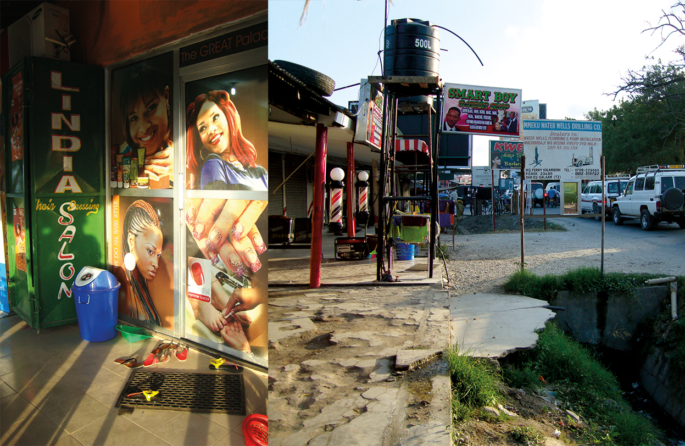 De bovenstaande foto’s heb ik gemaakt in Dar es Salaam, waar het vliegveld is waar ik aangekomen ben. Een zeer drukke stad, die de hele dag vol staat met auto’s. In dit voorbeeld komt duidelijk naar voren dat er ook veel gebruik wordt gemaakt van bekende persoonlijkheden om producten aan te prijzen. Je kunt stellen dat haren en nagels in Tanzania een hoofdprioriteit zijn. Extensions die worden gemaakt in China en spotgoedkoop zijn, worden in grote hoeveelheden verwerkt in de haren van vrouwen. In elke straat zitten meerdere kapperszaken, waar het altijd druk, vol en gezellig is. Tussen de kappersstoelen en in de wachtruimtes lopen jongeren met teiltjes water en tassen vol nagellak. Voor 1000 shilling, oftwel 10 eurocent, krijg je een volledige pedicure behandeling en worden je nagels perfect gelakt. “Linda Salon” loopt in alle waarschijnlijkheid goed, want ze heeft er voor gekozen foto’s te gebruiken als beschutting voor de zaak, dat is een luxe vorm. “Linda Salon” is wél met de hand geschreven. LINDA is in een andere stijl geschreven dan SALON. Wel hebben de letters dezelfde kleur. De rode details die op verschillende manieren zijn verwerkt, zorgen ervoor dat het één geheel wordt. ‘hair Dressing’ is ook nog ergens verwerkt in het beeldmerk. De foto’s op de ramen en deur verbeelden de mogelijkheden die er zijn om haren en nagels te decoreren. Wat opvalt is dat de foto’s geïdealiseerde beelden zijn waarop vrouwen staan afgbeeld die blanker zijn dan de Tanzaniaanse vrouwen. Dat is een schoonheidsideaal in Tanzania. Op de rechter foto zie je onder andere een bord voor de Barber Shop SMART BOY. Super black, wave, wax, facial en nog meer diensten worden aangeboden. Van veraf is het niet goed leesbaar. De letters zijn omlijnd met een dikke paarse rand en letters zijn kleiner en smaller gemaakt. Op dit ene kleine bord worden drie verschillende lettertypes gebruikt, in twee verschillende kleurstellingen. Will Smith wordt gebruikt om aan te geven hoe je eruit zou kunnen zien, na een behandeling door de barbier van SMART BOY.
05.4 VERKIEZINGEN Toevallig heb ik een verkiezings periode meegemaakt tijdens mijn verblijf. Er zijn twee grote partijen in Tanzania. De gevestigde partij die al jaren aan de macht is, de CCM. En een nieuwere partij, de Ukawa. Ze hadden ieder hun eigen kleuren. CCM gebruikt de kleuren geel en groen. Ukawa hanteert blauw, rood en wit. Na verloop van tijd veranderde het straatbeeld door alle posters, vlaggen, flyers, vlaggetjes en de kleding van de mensen.
Tijdens de situaties dat duizenden mensen zich op straat bevonden, gehuld in groen en gele kleding, fluitend, zingend, dansend, juichend en vrolijk, leek het alsof het hele land gelukkig was. Maar in situaties dat ik bij mensen thuis was, in pauze uren op mijn werk en in de kroeg, merkte ik dat er veel ontevredenheid was over de politieke situatie in het land. Toch gingen ook deze mensen de straat op om campagne te voeren. De groepsdruk en de angst om verstoten te worden uit de gemeenschap wegen zwaarder dan de inviduele mening. Ik kon merken dat de campagnedagen ook voor veel plezier zorgden. Het samen zijn, dansen en zingen gaf ook weer mentale steun. Tevens weten alle mensen dat er veel corruptie en omkopingen plaatsvinden. Het is moeilijk is om tegen de gevestigde orde in te gaan. Het bedrijf waar ik werkte verzorgde veel campagnemateriaal voor beide partijen. De posters, t-shirts, flyers en vlaggen werden ontworpen en gedrukt door mijn collega’s. In de stad werden alle gebouwen, alle straten en alle billboards volgeplakt met posters. Maar ook buiten de stad, tussen de hutjes en kleine huisjes, hing het vol met drukwerk. Partijen eisten bepaalde gedeeltes van het eiland op. Je kon precies zien wanneer je je in een gebied bevond van de CCM of Ukawa. De grootste billboards, de grootste vlaggen en de meeste posters waren van de CCM, dus groen en geel gekleurd. Zij zorgden er voor dat op dagen dat Ukawa in Zanzibar was, de elektriciteit werd afgesloten zodat het spreken in het openbaar moeilijker werd. Dit geeft de macht van de CCM aan. 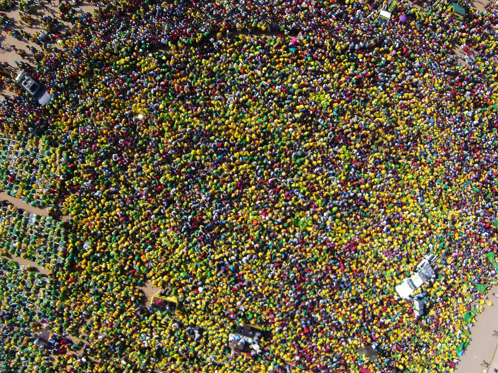 De verkiezingen vonden plaats het weekend nadat ik was vertrokken. Het heeft vijf dagen geduurd voordat alle stemmen geteld waren. Toen werd de uitslag geboycot omdat CCM beweerde dat er fraude was gepleegd. En gaan geruchten dat de CCM veel stemmen heeft verloren, maar dit is niet te achterhalen. Wat mij is opgevallen is dat ik in Nederland helemaal geen informatie kon vinden in de media over de verkiezingen. Ik heb gecommuniceerd met mensen uit Zanzibar om te weten hoe de verkiezingen waren verlopen.
Wat is de relatie tussen de “Afrikaanse” khanga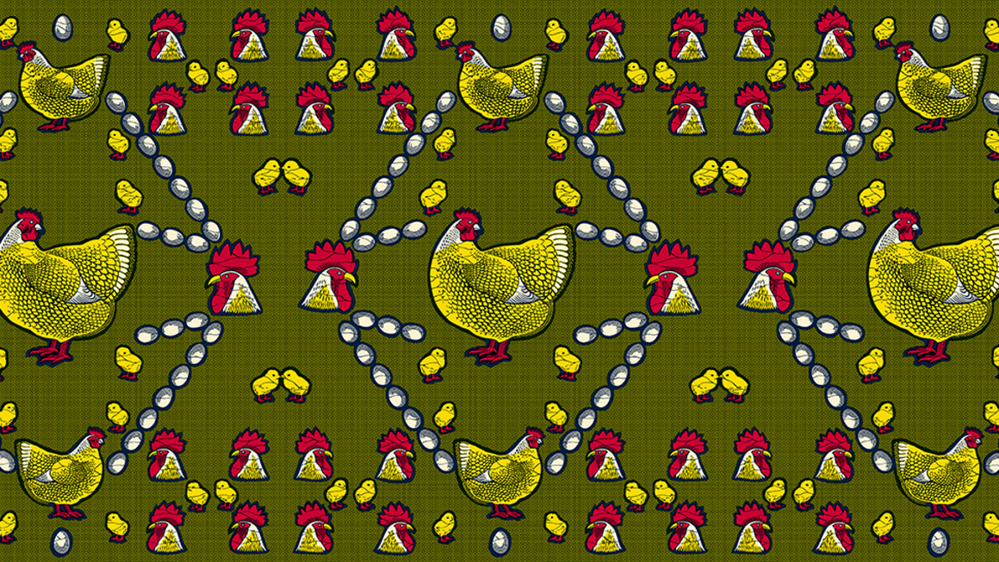 en grafisch ontwerpen in
Oost-Afrika?
Heeft technologie voor de kloof gezorgd tussen Oost-Afrika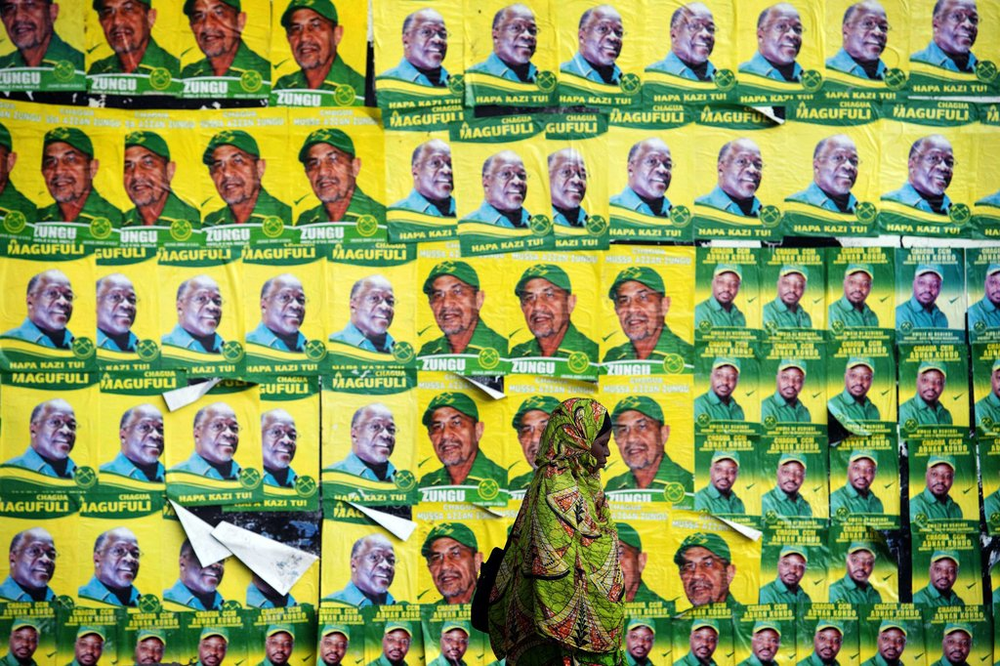 en het westen gezorgd?
Het straatbeeld van Tanzania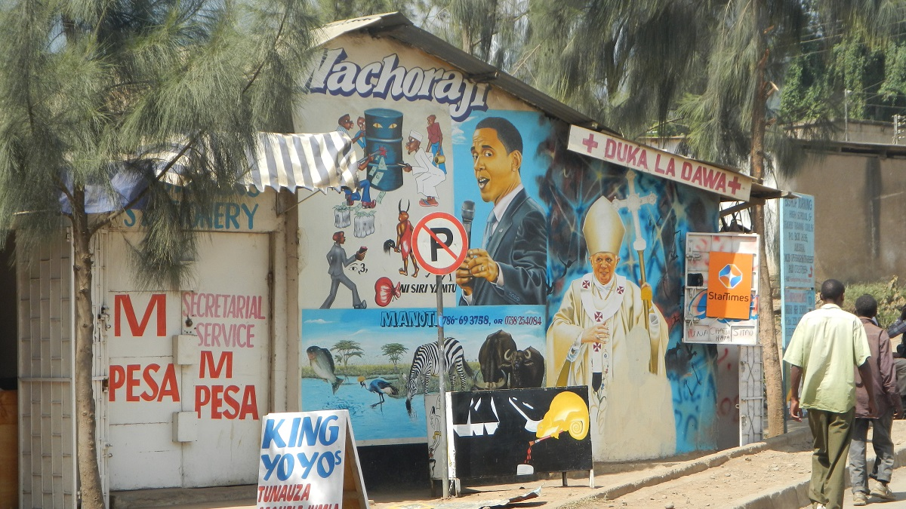 in vergelijking met Nederland.
Mijn tijd in Tanzania met verkiezingen en nog meer.
en nog meer.
Heeft technologie voor de kloof gezorgd tussen Oost-Afrika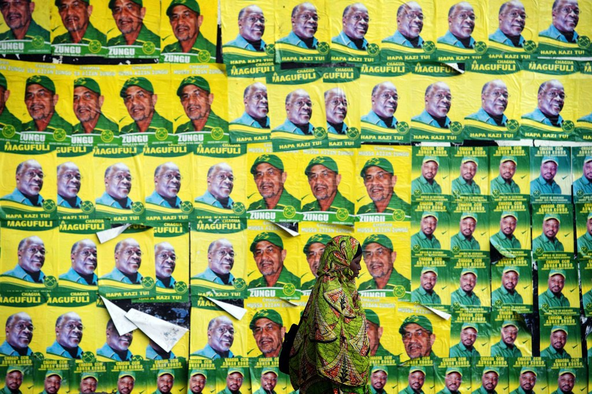 en het westen gezorgd?
Het straatbeeld van Tanzania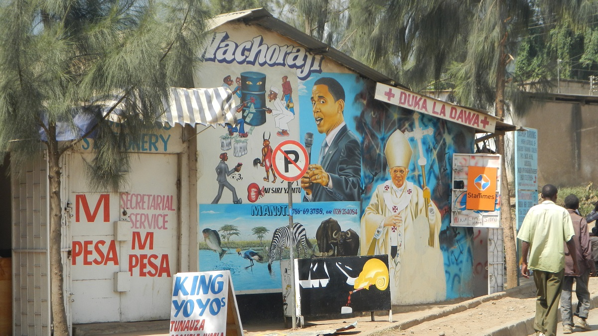 in vergelijking met Nederland.
Mijn tijd in Tanzania met verkiezingen en nog meer.
en nog meer.